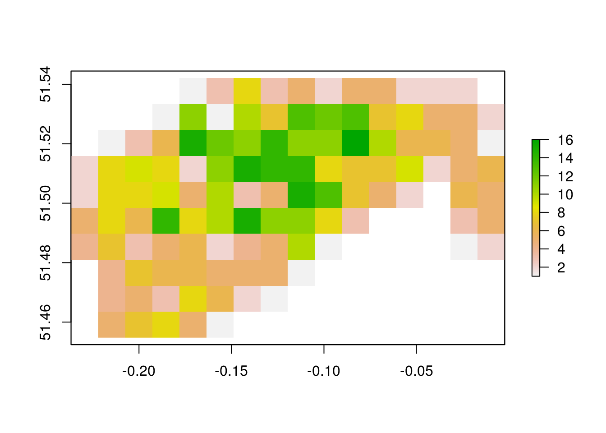
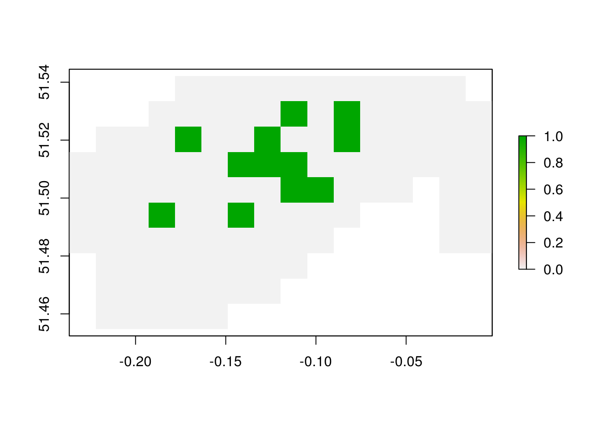
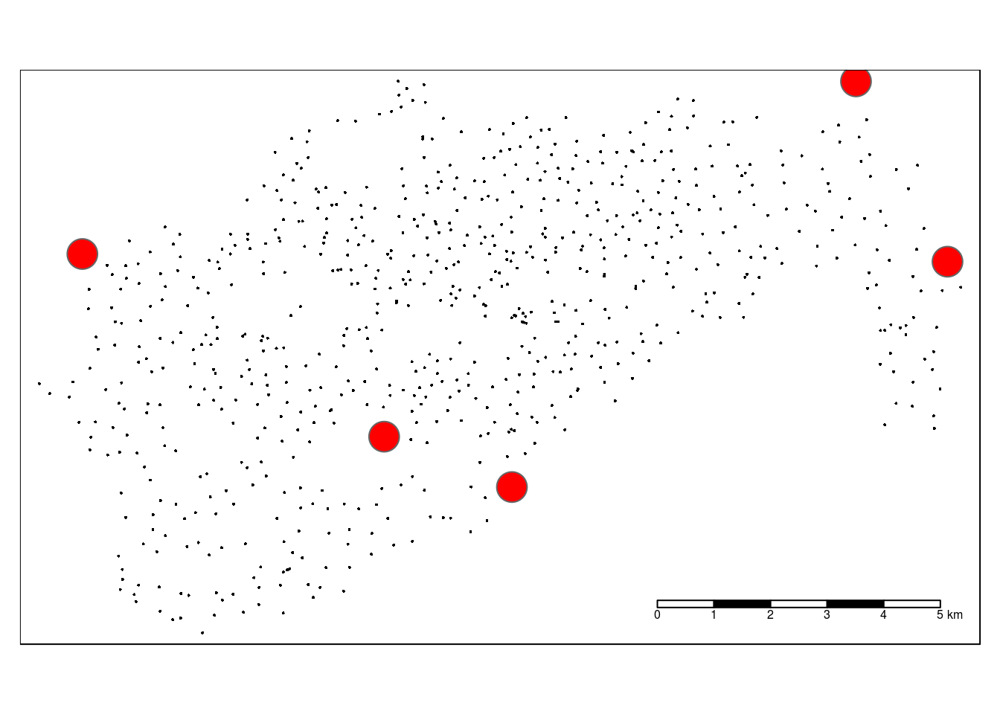
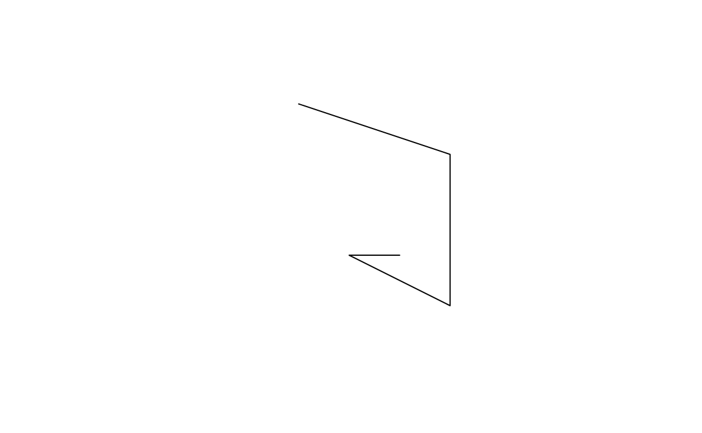
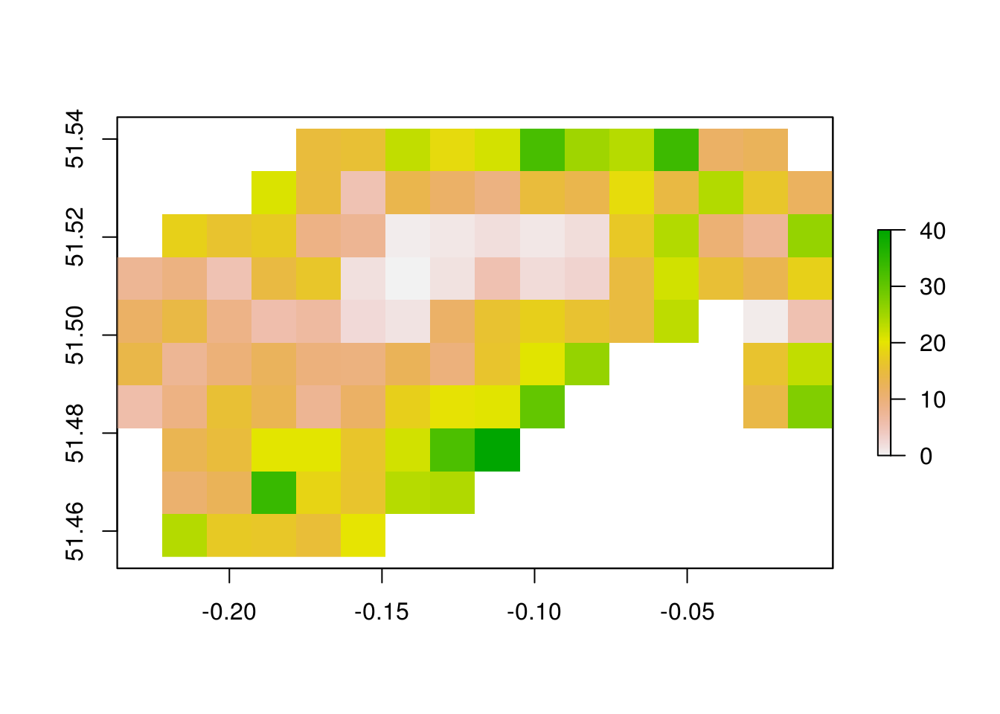
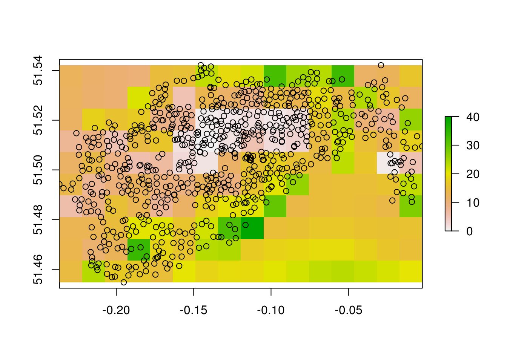
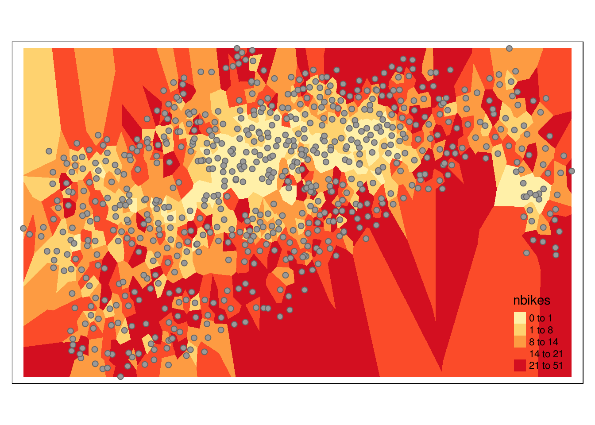
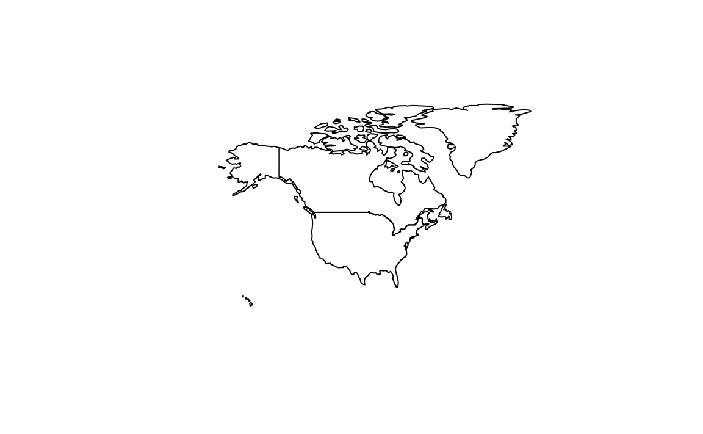

10 Point Pattern analysis and spatial interpolation
This chapter teaches the basics of point pattern analysis in R. It is influenced by the chapter on Spatial Point Pattern Analysis (Bivand, Pebesma, and Gómez-Rubio 2013) and an online tutorial on Point Pattern Analyis by Robert Hijmans.
We will use the sp package for this rather than the newer sf package, as point pattern analysis is more established for the former Spatial class system than the latter’s sf classes. We will also use raster as it has concise and well-designed functions for spatial data:
pkgs = c(
"tmap",
"raster",
"mapview",
"dismo",
"gstat"
)
i = pkgs[!pkgs %in% installed.packages()]
if(length(i) > 0)
install.packages(i)
lapply(pkgs, library, character.only = TRUE)10.1 Data
This chapter uses two datasets on the spatial distribution and some attributes of cycle hire ‘docking stations’, one from OpenStreetMap and one from an on-line data feed.4 It also uses boundary data representing the 33 boroughs of London. These datasets live in the spData package and can be loaded as follows:
library(spData)
lnd = as(lnd, "Spatial")
cycle_hire = as(cycle_hire, "Spatial")
cycle_hire_osm = as(cycle_hire_osm, "Spatial")We use the Spatial classes used by the sp dataset, as these are required by point pattern analysis functions used in the chapter. The majority of the chapter will use only the official cycle_hire dataset. Towards the end of the chapter we will compare the two point patterns to see how similar they are. But first we focus only on the former dataset.
10.2 Basic point pattern analysis
Before undertaking more advanced analysis, it makes sense to start simple, with basic statistics and visualizations describing point patterns. As with most analysis tasks this first stage involves visual inspection of the data. This done in the code chunk below, which generates Figure 10.1:5
plot(cycle_hire)
points(cycle_hire_osm, col = "red")
plot(lnd, add = TRUE)Figure 10.1: The spatial distribution of cycle hire points in London according to two datasets. One is from the cyclehireapp.com website (black); the other is from OpenStreetMap (red).
It is immediately clear that the two datasets on cycle hire points are closely related (they have a high degree of spatial correlation) and have a distinctive pattern. cycle_hire represents official data on cycle parking, and will be the main point dataset analysed. cycle_hire_osm is the community contributed dataset on cycle hire locations, downloaded from OpenStreetMap. Both sets of points overlay some of London’s 33 boroughs, the central ones, and seem to follow the River Thames, especially along the north bank of the river. But how to describe that information quantitatively, and extrapolate the values from the plotted location to other areas?
It is the purpose of this chapter to provide the know-how to answer such questions, that should be extensible to many applications that involve point data.
10.3 Point density
A basic statistic to compute on points within a polygon is the number of points per polygon, and the related statistic of point density. Let’s first compute that for London overall, before doing a zone-by-zone breakdown:
nrow(cycle_hire)
#> [1] 742
lnd_area = sum(area(lnd)) / 1e6The results show that there are 742 cycle hire points and that London covers an area of just over one-and-a-half thousand square kilometres (1 km2 = 1000000 m2 = 1e6 m2 in scientific notation). That represents on average roughly one cycle parking rental space per 2 square kilometers, or half a rental point per square kilometer, as revealed by the results of the calculation below:
nrow(cycle_hire) / lnd_area
#> [1] 0.471This is not a good indicator of the density of the bike hire scheme overall, because they are so concentrated in central London. A more representative result can be found by calculating the average point density within the extent of the bike hire scheme. We can coerce the bounding box (or extent in raster terminology) of the stations into a polygon whose area can be measured with the following commands:
bb_hire = as(extent(cycle_hire), "SpatialPolygons")
crs(bb_hire) = crs(lnd)
c_area = area(bb_hire) / 1e6
c_area
#> [1] 15810.3.1 Exercises
- What is the average point density of cycle hire points within the scheme’s bounding box?
- Why did we add the second line of code in the previous code chunk?
- Why are there two
crs()calls? - The above chunk uses raster functions. How would you write the above code using sp code?
10.3.2 Challenges
- Reproduce the result using sp code.
- Reproduce the results using sf code.
10.4 Points in polygons and raster cells
A useful level of analysis at which to analyse the geographical distribution of points is the zone-level. We can aggregate the points per zone and provide summary statistics. Starting with the number of points per polygon, this would calculated as follows:
crs(lnd) = crs(cycle_hire)
cycle_hire_ag = aggregate(cycle_hire["id"], lnd, FUN = "length")10.4.1 Exercises
Based on an analysis of the cycle_hire_ag:
- How many zones contain no cycle hire points?
- What is the average number of cycle hire points per zone?
10.4.2 Challenge
Find the average density of cycle hire points per zone in London.
- Plot the result in an attractive map (e.g. as shown below).
- Find which zone has the highest density of cycle hire points.

A problem with the zonal representation of point density is that the results are dependent on the somewhat arbitrary shapes and sizes of the zones in which the points are aggregated. To overcome this problem we can create a raster representation of the points:
r = raster(bb_hire, ncol = 16, nrow = 10)
rc = rasterize(cycle_hire@coords, r, fun = "count")
plot(rc)
points(cycle_hire)
plot(lnd, add = TRUE)
This is already very useful. The results show that there are 5 clusters of cycle parking with much higher density than the surrounding areas. We can visualise these clusters using a static plot as follows:
plot(rc)
plot(rc > 12)
More useful, in terms of characterising the geographical characteristics of each cluster, would be to plot these 5 clusters interactively. Do this with mapview:
library(mapview)
mapview(rc > 12) +
mapview(cycle_hire)The resulting interactive plot draws attention to the areas of high point density, such as the area surrounding Victoria station, illustrated below.

10.4.3 Exercises
- Explore the interactive map created by mapview above.
- Try to explain the location of the high density clusters: what are they near?
- Where would you suggest building more cycle hire points?
10.5 Point distance analysis
Another important characteristic of point patterns is the distances between points, which can be calculated using raster’s dist() function:
d = spDists(cycle_hire, longlat = TRUE)
dm = as.matrix(d)
dm[1:3, 1:5]
#> [,1] [,2] [,3] [,4] [,5]
#> [1,] 0.00 6.91 1.97 0.77 5.16
#> [2,] 6.91 0.00 8.21 6.31 2.92
#> [3,] 1.97 8.21 0.00 2.71 5.92The results show the distance, in km, form every point to every other. The dm object is known as a distance matrix: note the diagonal of zero values. This distance matrix is very useful for various types of analysis, a couple of which we’ll explore below.
To find the minimum distance of each point to every other, we can use the apply function, for each row, and then select the top 5:
diag(dm) = NA
dmin = apply(X = dm, MARGIN = 1, FUN = min, na.rm = TRUE)
sel_isolated = order(dmin, decreasing = TRUE)[1:5]
qtm(cycle_hire, col = "grey", main = "Isolated points") +
qtm(cycle_hire[sel_isolated,], symbols.col = "red", symbols.size = 2) + tm_scale_bar()
Another plot that is useful is that of the ‘G function’ for exploring the extent to which points cluster or separate compared with what would be expected from a random distribution (Bivand, Pebesma, and Gómez-Rubio 2013):
distance = sort(unique(round(dmin, digits = 3)))
Gd = sapply(distance, function(x) sum(dmin < x))
Gd = Gd / length(dmin)
plot(distance, Gd)10.6 Spatial interpolation
Spatial interpolation refers to methods of estimating the value of something in one place, based on measurements taken elsewhere. It depends on spatial autocorrelation, defined in Waldo Tobler’s ‘first law of Geography’ as follows (Miller 2004):
Everything is related to everything else, but near things are more related than distant thing
Building on the example of cycle hire points in London, we can ask the question: what is the expected number of bikes for a stand in location x, given knowledge of the existing data.
Thus spatial interpolation requires a dependent variable, which is summarised numerically and visually below:
summary(cycle_hire$nbikes)
#> Min. 1st Qu. Median Mean 3rd Qu. Max.
#> 0.0 3.0 11.0 12.2 19.0 51.0
tm_shape(cycle_hire) +
tm_symbols(col = "nbikes", palette = "YlOrRd", alpha = 0.6, style = "quantile")
There is a clear spatial pattern to this: there are more bikes parked in the outer docking stations. We can say that verbally, but how to we represent that on the map?
A first port of call would be to rasterise the result, using the the raster representation of the study area contained in the object r to find the mean per cell:
rnbikes = rasterize(cycle_hire, r, field = "nbikes", fun = mean)
plot(rnbikes)
What about estimating the values of cells outside the current network area? We can use raster’s focal() function to estimate that.
w = matrix(1, nc = 9, nr = 9)
r_interp1 = focal(x = rnbikes, w = w, fun = mean, NAonly = TRUE, na.rm = TRUE, pad = TRUE)
plot(r_interp1)
points(cycle_hire)
10.6.1 Exercises
- Experiment with different matrix sizes of
win the above code block. What difference does the size make? - Note that the 9x9 cell focal point leads to an ‘over smoothing’ of the results. Find a way to include only values from touching cells in the results.
10.7 Voronoi polygon interpolation
The raster cell method of spatial interpolation was fun, but not that sophisticated or spatially precise, with a resolution of around 1 km.
The next simplest solution is to break the area up into pieces and assign the value of the entire area to the value of the point it contains:
library(dismo)
v = voronoi(cycle_hire)
v = intersect(v, r)
#> Warning in intersect(x, y): non identical CRS
tm_shape(v) +
tm_fill("nbikes", palette = "YlOrRd", style = "quantile") +
qtm(cycle_hire, symbols.size = 0.2)
10.7.1 Exercises
- Create a point at a random location on the map and plot it prominently on top of the previously plotted layers.
- What would be it’s estimated ‘nbikes’ a) from the voronoi polygon interpolation and b) from the raster interpolation.
- Which do you think is most accurate?
10.8 Interpolation with the gstat package
gstat provides a number of functions for spatial prediction and interpolation using a range of models. The most basic of these, and a workhorse for spatial interpolation is Inverse Distance Weighting (IDW):
library(gstat)
gs = gstat(formula = nbikes~1, locations = cycle_hire)
crs(r) = crs(lnd)
r_idw = interpolate(r, gs)
#> [inverse distance weighted interpolation]
plot(r_idw)
10.8.1 Exercises
- Look at the original data - what could explain the spatial distribution of the
nbikesvariable? - Experiment with the spatial resolution - we’re using 1 km grid cells which are huge!
- Try using other methods described in Robert Hijman’s tutorial on spatial interpolation.
- Try cross-validating the results. Which performs best?
References
Bivand, Roger, Edzer J Pebesma, and Virgilio Gómez-Rubio. 2013. Applied Spatial Data Analysis with R. Vol. 747248717. Springer.
Miller, Harvey J. 2004. “Tobler’s First Law and Spatial Analysis.” Annals of the Association of American Geographers 94 (2).
Docking stations enable sustainable and fast mobility for people in central London. They are automated bicycle parking facilities which allow people can borrow and return bicycles for a small fee. The sturdy 3-speed bicycles they contain have become known as ‘Boris bikes’ and, among some Londoners, ‘Sadiq cycles’, after the past and present London Mayors Boris Johnson and Sadiq Khan, although their official name is ‘Santander cycles’. See
?cycle_hirefor further information about these datasets.↩Note the similarities and differences between sp and sf plotting code and results. Both extend the
plot()command to create a simple static map, meaning that arguments used in base graphics such ascolwork. However, sp’s plot method does not create facets for multiple variables by default and therefore you do not have to specify columns to create a single map. sp plots omit a colourscheme by default.↩